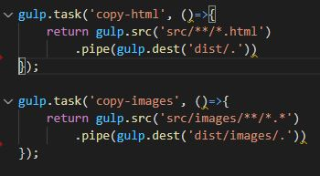
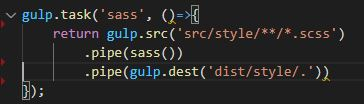
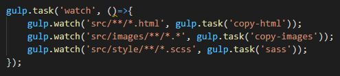
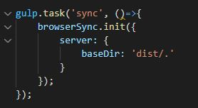
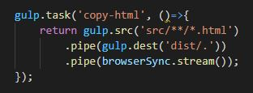
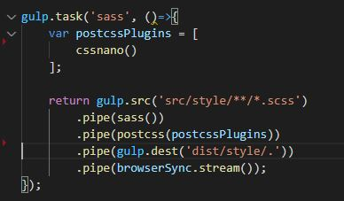
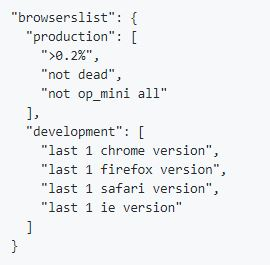
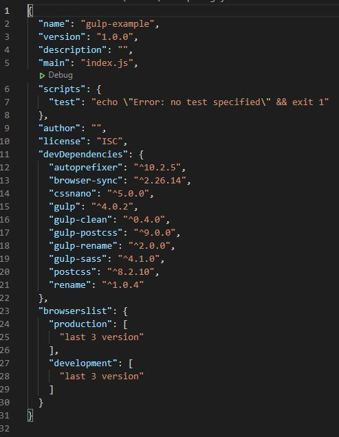
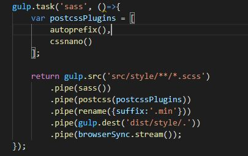

Сборщик задач Gulp (https://github.com/katloginova/gulp-example)
Gulp – это таск-менеджер для автоматического выполнения часто используемых задач (например, минификации, тестирования, объединения файлов), написанный на языке программирования JavaScript. Программное обеспечение использует командную строку для запуска задач, определённых в файле gulpfile.js.
Для начала разобьём наш проект на две части: исходный код (src) и результирующий (dist), который получен путем компиляции при помощи gulp.
Устанавка утилиты командной строки «gulp»:
npm i -g gulp-cli
Для того, чтобы сделать инициализацию проекта используется команда (делается это один раз «за всю жизнь» проекта) внутри папки проекта:
npm init
В результате инициализации появится целый ряд вопросов, на которые необходимо ответить, чтобы сконфигурировать node.js в проекте:
- Имя проекта/пакета
- Версия приложения
- Описание
- Точка входа (используется в случае, если приложение JS)
- Тестовая команда
- Git репозиторий (можно не указывать)
- Ключевые слова (используется, если выкладывается библиотека и по этим словам ищут эту библиотеку)
- Автор
- Лицензия
- Результат (сгенерированный файл «package.json») / yes
В файле «package.json» записываются все необходимые зависимости, которые используются в проекте (библиотеки, модули). Добавлять зависимости можно вручную, а можно с помощью командной строки с помощью ключа «--save-dev». Т.е. когда мы устанавливаем какой-либо npm-пакет дописываем в конце данный ключ, и тогда он автоматически впишется в файл «package.json», как зависимость.
Теперь перейдем к установки библиотеки сборщика задач «gulp»:
npm i gulp –save-dev
После установки появится папка «node_modules», которую необходимо добавить в «.gitignore», а также файл «package-lock.json».
Но если необходимо использовать все библиотеки, которые прописаны в «package.json» на другом компьютере после скачивания проекта с удаленного репозитория, то для этого прописывается команда «npm instal».
Затем создадим файл конфигурации «gulp» под названием «gulpfile.js», где и будем задавать необходимые задачи для «gulp», которые помогут нам автоматизировать наш проект. В данном файле в самом начале задаются переменные, которым присваиваются устанавливаемые библиотеки или модули:
var gulp/имя переменной/ = require(‘gulp’)/значение в данном случае библиотека «gulp»/
После уже задается эти переменным (библиотекам) необходимые задачи. Задаются задачи следующим образом:
gulp.task(‘имя функции’, () => {что должно выполнятся});
Если «имя функции» называется «default», то его можно не прописывать в командной строке оно выполняется по умолчанию. Можно также выполнять несколько задач сразу или по очереди:
gulp.task(‘default’, gulp.series(‘функция1’, ‘функция2’)); /выполняются по очереди/
gulp.task(‘default’, gulp.parallel(‘функция1’, ‘функция2’)); /выполняются параллельно/
Теперь перейдем к конкретным задачам. Для начала зададим задачу для копирования статичных файлов из папки «src» в папку «dist» следующим образом:

gulp.task('default', gulp.series('copy-html', 'copy-images')); /выполняет поочередное копирование указанных папок/
Далее нам необходимо аналогично скопировать папки «styles», но при этом преобразовать файлы, находящиеся в исходной папке «src» с расширением «.scss» в файлы с расширение «.css», которые будут находится в результирующей папке «dist». Для этого установим модуль «gulp-sass»:
npm i gulp-sass –save-dev
И после этого создадим задачу, преобразующую в другойформат, а затем копирующую в результирующую папку:

Для удобства создадим задачу, которая будет следить за изменениями в наших файлах проекта:

gulp.task('build', gulp.series('copy-html', 'copy-images', 'sass'));
gulp.task('default', gulp.series('build', 'watch')); /выполняет сначала копирование файлов, а затем следит за их изменениями/
Установим модуль синхронизации с браузером «browser-sync», который не является модулем библиотеки «gulp», но очень хорошо совместим с этой библиотекой:
npm i browser-sync –save-dev
После установки, как обычно создадим переменную, но при этом используем метод создания элемента поскольку «» не принадлежит библиотеки «gulp»:
var browserSync =require('browser-sync').create();
После создадим следующую задачу, которая будет синхронизировать наш проект с браузером:

gulp.task('build', gulp.series('copy-html', 'copy-images', 'sass'));
gulp.task('buid-watch', gulp.series('build', 'watch'));
gulp.task('default', gulp.parallel('build-watch', 'sync'));
Но этого недостаточно, чтобы наш проект обновлялся с каждым нашим изменением. Для этого необходимо для всех существующих задач добавить еще одну операцию:
.pipe(browserSync.stream());
Т.е. выглядить это должно следующим образом:

PostCSS
PostCSS – это библиотека, содержащая различные модули необходимые для обработки уже готового css-файла. Самыми распространенными плагинами «postcss» являются:
- плагин, который минимизирует css-файл, убирая все пробелы из кода – «cssnano»
- плагин, который добавляет префиксы, где они необходимы, что более ранние версии браузеров поддерживали наш проект – «autoprefixer»
Для установки всех необходимых модулей библиотеки «postcss» используем команду:
npm i postcss –save-dev /это отдельная библиотека, которая необходимо для того, чтобы работал модуль «gulp-postcss»/
npm i gulp-postcss –save-dev /это модуль «postcss» библиотеки «gulp»/
И все по старой схеме создаем переменную библиотеки «postcss»:
var postcss = require('gulp-postcss');
И когда библиотека установлена можно устанавливать ее плагины необходимые для проекта, например, «cssnano»:
npm i cssnano –save-dev
Создадим задачу, где переменная:
var cssnano = require('cssnano');
а сама задача:
var postcssPlugins = [cssnano()];

Установим плагин «autoprefixer» аналогичным образом:
npm i autoprefixer –save-dev
Создадим переменную и добавим ее в ранее созданный массив «postcssPlugins» с плагинами библиотеки «postcss»:
var autoprefix = require('autoprefixer');
var postcssPlugins = [
autoprefix(),
cssnano()
];
Плагин «cssnano» лучше задавать в конце массива, поскольку он минимизирует css-файл.
Но для того, чтобы этот плагин работал необходимо указать под какие версии браузера он должен адаптировать минимизирует css-файл. Заходим на официальный сайт с документацией https://postcss.org/, выбираем вкладку «Plugins» и находим «autoprefixer». Где будет описано, как указывать версии браузера в файле «package.json», копируем и в вставляем в данный файл:

Можно код немного упростить, указав на 3 последних версии. После чего «package.json» будет выглядеть:

Для переименования файлов необходимо использовать плагин «gulp-rename»:
npm i gulp-rename –save-dev
var rename = require('gulp-rename');

Еще один очень важный плагин «gulp-clean», который может помочь очисть результирующую папку проекта «dist» от ненужных файлов. Идея состоит в том, что мы сначала удаляем все содержимое данной папки, а затем копируем содержимое папки «src» в эту папку. И так при каждом изменение проекта. И все по старой схеме устанавливаем пакет, создаем переменную и задаем задачу для «gulp»: